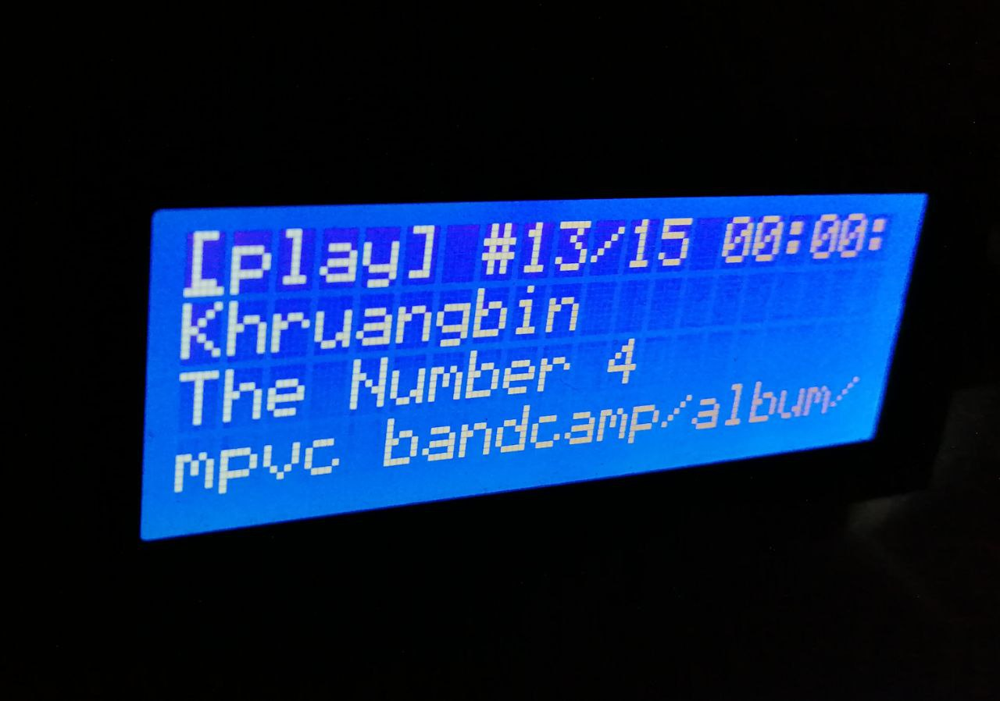

@gmt4 mpvc logbook 🎧
- about A minimal mpc-like interface for controlling mpv from the shell.
- goodies Support TUI, FZF, WEB, CLI, playing youtube & streaming services (See #20221219)
- tags music-player terminal minimal mpv tui media-player mplayer posix-sh mpv-player mpvc mpvc-tui
- github https://github.com/gmt4/mpvc/
- promote Star, share, and promote our work through the buttons below if you find it useful. Thanks!
Logbook
The logbook below is just that, a log of notes as I use and work on mpvc. Entries are chronologically ordered with oldest first, and, attempt to be self-contained focused on a certain functionality/topic, to the extent that it is possible.
On playing URLs, 30 Mar 2022
What got me started on using mpvc is being able to play URLs. This is the cause to start writing what you are reading now (this repo at https://github.com/gmt4/mpvc/). As in
mpvc add https://kuplasound.bandcamp.com/album/mirage/
On securing mpv socket location, 14 Nov 2022
One thing that bothers me when using mpvc, is that most programs
performing ipc on mpv socket, just leave the socket at /tmp/mpvsocket.
A better default location for the mpv socket is
$HOME/.config/mpvc/mpvsocket.
On load/save functionality, 18 Nov 2022
A thing that I’d like to be able to do is to perform mpvc load/save of
the playlist, and, be able of manipulating the playlist using standard
Unix commands eg. grep. The easiest way that comes to mind, is something
a la: mpvc save | grep -v artist | mpvc load, this enables to filter
out an artist, and drop all the songs by this artist.
On persistent mpv startup, 20 Nov 2022
One particular feature where improvement could be done is
mpvc -a audio.opus, when mpv finishes playing audio.opus, mpv
terminates, and, the current playlist is lost. This happens as mpv is
started with –idle=once. A solution for this is to start mpv separately
with –idle=yes. A shortcut for this is to run mpvc --mpv that does
exactly this, after this the mpv instance can be manipulated with mpvc,
and does not terminate once mpv finishes playing.
On a minimal mpvc-tui, 03 Dec 2022
One thing I keep doing a lot, is typing mpvc status and mpvc -i, to
check the mpv playlist and status. To this end I’ve quickly hacked a
minimal TUI named mpvc-tui, that continuously shows the mpvc playlist
and status. In addition, while in mpvc-tui you can Control+C, to get a
mpvc prompt to run quick mpvc commands, like: prev, next, pause, toggle,
seek, volume, etc.
On using the mpvc-tui prompt, 13 Dec 2022
As explained above, mpvc-tui does three things: 1) display status, 2) display playlist, 3) prompt the user for interaction. Once we hit Control+C, and land on the user prompt, the following can be done:
- run mpvc commands starting with “mpvc”. This allows for manipulating the mpv/mpvc status. The commands run with “mpvc” have QUIETFLAG=true set, to not clutter the mpvc-tui.
- run shell commands internally starting with “!”. This allows for commands that manipulate mpvc-tui program, such as changing the working directory, with cd/pwd. This also allows for starting your favorite editor to configure the mpvc-tui look and feel with: “!$EDITOR $MPVC_CONFIG”.
- run shell commands externally starting with “!!”. This allows for running commands on a separate shell. This gives room for more complex commands, like starting alsamixer to manipulate audio levels, change outputs with `pactl(1)`, etc.
- quit the mpvc-tui, by typing quit, exit, or “q”.
When using the mpvc-tui prompt for some time, one notices that there’s a lot of repetition of commands. To address repetition, one solution is to use a history file of past commands, and completion of commands and filenames. This can be achieved using `rlwrap(1)` in one shot mode that becomes a life-saver. Now, you get a more comfortable prompt, where TAB completion works on commands and filenames, as well as Control+R to repeat previous commands in the history file.
On using the mpvc-tui -x launcher, 14 Dec 2022
Another nifty detail of mpvc-tui, is that it can be quickly spawn from
the WM launcher by using mpvc-tui -x, then type a few mpvc commands to
setup music, and close it. Or it can be started on the current terminal
with `mpvc-tui` and left running as a long running program, and get
back to it when needed.
On managing playlists with mpvc autoload/autosave, 15 Dec 2022
When using mpc(1), playlists can be managed using the mpc
load/save/lsplaylists commands. In addition to load/save, mpvc adds the
autoload/autosave commands:
mpvc autosave: save the current playlist to $XDG_CONFIG_HOME/mpvc/playlist/. If no arguments are provided the current playlist is named “$(date -Imin)”. Otherwise, if a name is given “mpvc autosave ambient.m3u”, then the file is saved as “ambient.m3u”mpvc autoload: loads the named playlist from $XDG_CONFIG_HOME/mpvc/playlist/.mpvc lsplaylists: list the playlists under $XDG_CONFIG_HOME/mpvc/playlist/.
The above enables to arrange a playlist, and once we are happy with it, save it with `mpvc autosave playlist.m3u`, later, we can replay it again with: `mpvc autoload playlist.m3u`.
On customizing mpvc-tui look and feel, 18 Dec 2022
While using mpvc-tui, one ends up wanting to configure the minimal
look and feel that mpvc-tui provides. To this end the file mpvc.conf
under $XDG_CONFIG_HOME/mpvc/ provides a place to overwrite the default
settings of mpvc-tui.
Show HN: mpvc-tui – A minimal mpc-like CLI and TUI for controlling mpv, 16 Dec 2022
We are on “Show HN”! https://news.ycombinator.com/item?id=34013149
On issuing direct JSON IPC commands to mpv, 17 Dec 2022
That one is easy, for that purpose mpvc cmd args sends the
{ "command": args } to the JSON IPC, use mpvc cmdr args to send the
command, and retrieve the JSON IPC response. Some usage examples to test
are:
mpvc cmd show-text "hello-world" 2000mpvc cmd af toggle lavfi=[loudnorm=I=-16:TP=-3:LRA=4]mpvc cmd af toggle lavfi=[dynaudnorm]mpvc cmd af toggle lavfi=[dynaudnorm=g=5:f=250:r=0.9:p=0.5]
Note, audio filter commands above are lifted from https://github.com/mpv-player/mpv/issues/6210.
On playing music from streaming services as youtube and co., 19 Dec 2022
Mpv already plays URLs (both video and audio) from streaming platforms as youtube. So the one thing missing is to be able to search, select, and enqueue music from these services. This is provided by mpvc-fzf -s/-p, that does:
- Query the Invidious API and return a list of URLs
- Use fzf -m to select from the search results.
- Use mpvc load to enqueue the selected songs into the mpv playlist.
Some usage examples of the above are:
mpvc-fzf -s 'rolling stones': Search and return the list of URLs found.mpvc-fzf -s 'rolling stones' | fzf -m: Search, Select and return the list of URLs selected.mpvc-fzf -s 'rolling stones' | fzf -m | awk '{print $1}' | mpvc load: Search, Select, Enqueue and play the list of URLs selected.mpvc-fzf -p 'rolling stones': Is a shortcut of the last command that does the whole thing.
Note, that you can use this command from inside mpvc-tui too, by hitting Control+C and then typing “!mpvc-fzf -p rolling stones”
On subscribing and receiving mpv events, 21 Dec 2022
Mpv IPC JSON socket allows receiving the media events generated by the running mpv instance. Subscribing to the mpv events can be done using the command: mpvc idleloop, by default events appear on standard output for a separate program to consume and react them. Some usage examples of the above are:
mpvc idleloop: send the mpv events to stdout.mpvc idleloop | awk '/playback-restart/ {print}': select only the “playback-restart” mpv events.mpvc idleloop | awk '/playback-restart/ {system("notify-send -u normal -i dialog-warning \"$(mpvc)\"");print}': Send a notification when the track changes.mpvc idleloop | awk '/end-file/{ if(i++%2==0)system("mpvc playrand") }': select a random track when the current ends.
The mpvc-tui -n uses mpvc idleloop to raise desktop notifications,
as shown above.
On using mpv together with the fzf fuzzy finder, 27 Dec 2022
I discovered fzf while adding support for selecting and playing YT videos #logbook-20221219, so I’m quite a newbie on fzf. Still I’ve been playing with fzf+mpvc to get them working together. So far I’ve focused on 4 points:
mpvc-fzf -p: For searching/playing Internet media from YouTube.mpvc-fzf -l: For searching/playing Local media from your file-system.mpvc-fzf -f: For managing the mpv status and playlist: say mpvc play, pause, seek etc.mpvc-fzf -F: For searching/playing through mpvc data: gets data from stdin, and outputs the selection on stdout. One example where this comes handy is to search chapters like:mpvc chapter-list | mpvc-fzf -F | mpvc-fzf -1 | xargs mpvc set chapter(shortcutmpvc-fzf -c).
This is still on a very preliminary state, but it’s amazing what fzf can do, and so far, seems to fit very well with mpvc.
On using mpv together with the fzf fuzzy finder, 12 Jan 2023
Continuing on the topic of using fzf with mpv, I’ve decided to split the code into three scripts:
mpvc: that provides the mpvc functionality.extras/mpvc-tui: that provides the mpvc TUI functionality.extras/mpvc-fzf: that provides the mpvc FZF functionality.
I think it’s clear/simpler this way, as the mpvc-tui was getting more
and more fzf functionality, that was unrelated to the TUI. This breaks
some things, as for example, uses of mpvc-tui -[lfFspP] that now have
become mpvc-fzf -[lfFspP].
On controlling multiple remotely running mpv instances, 19 Jan 2023
A work in progress update, in no particular order, but, mostly focused on using mpvc to control a remote box (Raspberry Pi) acting as an audio/media center:
mpvc -S ~/.config/mpvc/mpvsocket-new --mpv add /path/to/media: Starts a newmpvinstance listening onmpvsocket-newand adds media.mpvc socklist: Lists all mpv sockets, including those that are inactive: without a mpv instance running.mpvc sockclean: Clean inactive mpv sockets: without a mpv instance running.- If the mpv socket resides on a separate computer, then, ssh forwarding
can bring the socket home:
ssh -NL $HOME/.config/mpvc/mpvsocket0:$HOME/.config/mpvc/mpvsocket0 mediacenterNote, the above command just “works”, but probably has some rough edges, and can be improved. - After issuing the previous command, the
mpvsocket0is locally accessible and can be directly managed bympvc, mpvc-fzf, mpvc-tui. For example, running mpvc to start a randomly chosen track from the playlist:mpvc -q play $(( $RANDOM % $(mpvc get playlist-count) ))
This goes together with other related command as:
mpvc cmd/sockcmd/repl/get/set/cycle.
On stashing mpv media player state to restore later, 19 Feb 2023
Something experimental I’ve been testing lately is using: mpvc stash
command to save the currently playing state, to be restored later. The
commands implemented by mpvc stash [list|show|push|drop|apply] are
inspired by git-stash(1):
mpvc stash list: Lists the currently mpvc stashes.mpvc stash show [name]: Shows the contents of the mpvc stash named [name].mpvc stash push [name]: Stashes the current mpvc state to [name].mpvc stash drop [name]: Removes the mpvc stash named [name].mpvc stash apply [name]: Applies the mpvc stash named [name].
This is different from mpvc load/save that only loads/saves the
playlist, as mpvc stash saves the current playing settings including:
playlist-pos, playback-time, volume, mute, pause, etc. together with
the playlist.
CSS, RSS & casts updates on the gmt4.github.io/mpvc site, 31 Mar 2023
A few things have been going on since last entry, some effort focused on getting a “decent” site (this HTML thing you’re reading right now @ gmt4.github.io/mpvc ) where its easy keep track of whats going on. This effort has :
- First, a minimal CSS to get a nice look and feel.
- Second, structure content, and, setup atom.xml RSS feed now to keep track.
- Third, a casts/ page provides now some mpvc asciinerama screencasts.
Keep posted.
Introducing mpvc-equalizer: a basic mpv equalizer for the CLI, 25 Apr 2023
This entry introduces
mpvc-equalizer
a Linear Phase 15-Bands Equalizer for the CLI/shell based on the
firequalizer15.lua mpv-script. The basic operations that are
available in mpvc-equalizer are:
mpvc-equalizer preset: Provides a set of basic equalizer presets ready to be loadedmpvc-equalizer reset/load/save: To reset/load/save mpvc equalizer settingsmpvc-equalizer json/bars: To query the equalizer settings as JSON or as CLI bars
An example of the `mpvc-equalizer` to set equalizer values for classical music:
mpvc-equalizer preset
mpvc-equalizer preset classical | mpvc-equalizer load
mpvc-equalizer bars
mpvc-equalizer reset
On applying ffmpeg AV filters using the MPV JSON IPC, 2 June 2023
Continuing with the topic of the previous post about mpvc-equalizer, one reason for starting mpvc, was to ease was to managing audio from the CLI. In that sense mpv integrates well with ffmpeg to apply AV filters (##https://ffmpeg.org/ffmpeg-filters.html”). However you’ve to, either start mpv specifying the ffmpeg cli flags for the AV-filters, or add keyboard shortcuts into the input.conf to be triggedred during runtime.
Instead of that, for quickly testing combinations of filters, I was
looking for something more CLI oriented: apply the filters using the MPV
JSON IPC. That’s what happens under the hood when a command
mpvc-cmdr af ... is run, for example:
# start adding a rubberband filter
mpvc cmdr af toggle '@rubberband:lavfi=[rubberband=pitch=1:tempo=1]'
# Change the AV filter is easy, rerun the command with the changes
mpvc cmdr af toggle '@rubberband:lavfi=[rubberband=pitch=0.98:tempo=1]'
# Removing the filter is as expected
mpvc cmdr af remove '@rubberband:lavfi=[rubberband=pitch=0.98:tempo=1]'
# Another option is toggling the AV filters on and off with
mpvc cmdr af toggle '@rubberband:lavfi=[rubberband=pitch=0.98:tempo=1]'
# The same goes for what filters are currently applied
mpvc getr af | jq
# Clearing all the current af filters
mpvc setr af ''
# Useful debuging af filters errors: lower/raise verbosity
mpvc setr msg-level all=error
mpvc setr msg-level all=warn
mpvc setr msg-level all=info
# Some af filters (see mpv --af=help)
mpvc cmdr af toggle '@dynaudnorm:lavfi=[dynaudnorm]'
mpvc cmdr af toggle '@afade:lavfi=[afade=t=in:ss=0:d=15]'
mpvc cmdr af toggle '@flanger:lavfi=[flanger=delay=1]'
mpvc cmdr af toggle '@tremolo:lavfi=[tremolo]'
mpvc cmdr af toggle '@vibrato:lavfi=[vibrato]'
mpvc cmdr af toggle '@apulsator:lavfi=[apulsator]'
mpvc cmdr af toggle '@aphaser:lavfi=[aphaser]'
mpvc cmdr af toggle '@aphasemeter:lavfi=[aphasemeter]'
mpvc cmdr af toggle '@aecho:lavfi=[aecho=in_gain=0.9:out_gain=0.9:delays=1:decays=0.9]'
mpvc cmdr af toggle '@lofi:lavfi=[ladspa=cmt:lofi:controls=c0=80|c1=20|c2=9000]'
# Some vf filters (see mpv --vf=help)
mpvc cmdr vf toggle '@life:lavfi=[life]'
mpvc cmdr vf toggle '@showvolume:lavfi=[showvolume]'
mpvc cmdr vf toggle '@showwaves:lavfi=[showwaves]'
mpvc cmdr vf toggle '@showspectrum:lavfi=[showspectrum]'
mpvc cmdr vf toggle '@avectorscope:lavfi=[avectorscope]'
mpvc cmdr vf toggle '@oscilloscope:lavfi=[oscilloscope]'
mpvc cmdr vf toggle '@mirrorbottom:lavfi=[[vid1]split[main][tmp];[tmp]crop=iw:ih/2:0:ih/2,vflip[flip];[main][flip]overlay[vo]]'
mpvc cmdr vf toggle '@mirrorleft:lavfi=[[vid1]split[main][tmp];[tmp]crop=iw/2:ih:0:0,hflip[flip];[main][flip]overlay=W/2[vo]]'
mpvc cmdr vf toggle '@mirrorright:lavfi=[[vid1]split[main][tmp];[tmp]crop=iw/2:ih:iw/2:0,hflip[flip];[main][flip]overlay[vo]]'
mpvc cmdr vf toggle '@hstack:lavfi=[[vid1]split[v1][v2];[v1][v2]hstack[t]]'
mpvc cmdr vf toggle '@vstack:lavfi=[[vid1]split[v1][v2];[v1][v2]vstack[t]]'
For more on this, the above filters can be piped to mpvc-fzf to applied using (c-o apply):
grep '^mpvc cmdr' docs/logbook.html | mpvc-fzf cmds
Introducing mpvc-web: a mpvc-tui like hack for the web/browser, 21 July 2023
A few things have been going on lately, among them, the most recent has
been adding mpvc-web that is just a quick hack to control a running
mpv instance from when no mpvc cli is available, a typical example is
when you just have a phone or tablet with no cli. To this I resorted to
mimic mpvc-tui interface but making it available through HTTP using
python3 -m http.server. This seems to work fine for simple things like
toggling music on and off, moving to next/prev entry in the playlist,
and raising/lowering volume. Check
extras/mpvc-web
for more, and you are warned: this is a ugly hack.
As a minor thing I’ve started aliasing mpvc commands that I use
frequently to their “m” counterparts in sh(1), not perfect, but handy
enough, and saves some typing: see the bash_aliases fulllist at
bash_aliases.mpvc (bash_aliases
(github)).
Some handy examples are:
alias m="mpvc"
alias mx="mpvc-fzf"
alias mff="mpvc-fzf"
alias mtt="mpvc-tui"
alias me="mpvc-equalizer"
alias mw="mpvc-web"
...
And some handy symlinks too:
ln -s $(which mpvc) ~/bin/m
ln -s $(which mpvc-fzf) ~/bin/mx
Check the Now Playing @ now/ that builds upon mpvc-tui
scrobbling code to generate a simple list of the most played media. The
Anti EP by
Autechre has raised to the top
position.
Introducing mpvc-autopilot: automatic start/stop based on presence, 15 Sep 2023
A simple need to have some background music automatically playing while
I’m near the device where mpvc is running, lets say, in media center
mode, and, pausing the audio when I’m away. A solution for this was to
write a small script in
extras/mpvc-autopilot
that periodically pings an IP (for example the LAN IP of your phone , or
alternatively detecting the presence of a Bluetooth device you carry
with yourself), then, if the presence of the device is detected, the
audio is resumed, otherwise, the audio is paused.
For an example of its usage, just run
PERIOD=300 NCHECK=3 mpvc-autopilot -i 192.168.0.2 where 192.168.0.2
must be replaced by the LAN IP of your phone. The listing below show the
output mpvc-autopilot doing periodic pings at 300 sec (5 minutes)
intervals. When NCHECK=3 consecutive ping checks fail to detect the
device, the audio is paused (pause=true). As soon as one ping check
succeeds, the audio is resumed (pause=false). This means that each 300
* 3 seconds (15 minutes) the audio can be paused, and in 5 minutes
resumed. Personally I prefer to raise NCHECKS=6, to have about 30
minutes of audio without pauses, anyway, the parameters are there for
catter for your needs, just play with them.
user@box mpvc $ mpvc-autopilot -p 300 -n 3 -i 192.168.0.2
# mpvc-autopilot mpvc pingscan PERIOD=300 NCHECK=3 192.168.0.2
# 2023-09-15T19:26+00:00 mpvc-autopilot PERIOD=300 NCHECK=6 pause=false c=0 n=0
# 2023-09-15T19:31+00:00 mpvc-autopilot PERIOD=300 NCHECK=6 pause=false c=0 n=-1
# 2023-09-15T19:36+00:00 mpvc-autopilot PERIOD=300 NCHECK=6 pause=false c=0 n=-2
# 2023-09-15T19:42+00:00 mpvc-autopilot PERIOD=300 NCHECK=6 pause=false c=0 n=-3
# 2023-09-15T19:47+00:00 mpvc-autopilot PERIOD=300 NCHECK=6 pause=true c=0 n=0
# 2023-09-15T19:52+00:00 mpvc-autopilot PERIOD=300 NCHECK=6 pause=false c=59 n=0 64 bytes from 192.168.0.2: icmp_seq=1 ttl=64 time=104 ms
This approach has some limitations, lets say, sometimes you want to fully disable mpvc-autopilot for a time, because:
- Disable mpvc-autopilot from resuming audio, because you want to
concentrate and don’t want music messing around.
Solution: just use the phone to accessmpvc-weband setmpvc vol 0for a time. - Disable mpvc-autopilot from pausing audio, because your phone
disables wifi, so the audio gets paused when you don’t want.
Solution: as explained above playing with PERIOD and NCHECK parameters, increase the time without pauses, for example NCHECK=6 or NCHECK=12 will pause audio when the device is not seen for 30 or 60 minutes, respectively.
On mpvc usage patterns for playing music/videos, 16 Sep 2023
This entry aims to provide a comprehensive view of the usage patterns of
mpvc. Several of the usage patterns
have been already covered in the previous entries of the logbook, like:
searching online media, manipulating the playlist or playing state, or,
using mpvc-stash(1) for storing/replaying the mpv playing state. This
entry focuses on combining the previous individual usages into an
overall usage pattern for using mpvc for listening music, viewing
videos,podcasts, etc. for this mpvc has to carry the following tasks:
- Search music/videos, for that using Invidious search from
mpvc-fzfclosed the gap, for example usingmpvc-fzf -p 'rolling stones'and choosing the songs to add to the playlist from the results. - Playing searched URLs, this is where the combo
mpv+yt-dlpshines - Managing URLs, for managing a playlist of URLs
mpvc stashis used- First, add the media using any mean, such as
mpvc add,mpvc-fzf -p query, or directly - Second, order the playlist using
mpvc mvormpvc rmor its counterpartsmpvc searchmvandmpvc searchrmmodify the playlist of the running mpv. - Third, set the
mpvcparameters like repeat, single, volume, idle, video, aspect, full screen, etc. - Fourth, once this is done review the current mpvc-stash with:
mpvc stash currentand store it withmpvc stash push - Last, when the
mpvc stashhas to be replayed usempvc stash apply, ormpvc stash editto modify it
- First, add the media using any mean, such as
- Storing URLs media locally, some URLs are played frequently that makes
sense to cache them. At this point,
yt-dlphas--download-archivefunctionality that is useful (this can be enabled in docs/config/mpv.conf). This works as follows:- First,
mpvc-fzf -g URL, with get the URL and download it wherempv.confdefines. - Then, a mean for
mpvcto resolve a downloaded URL to the corresponding local file was needed. For this whenMPVC_LOCAL_CACHE=1is enabled,mpvcprovides functionality to do that local cache search.
- First,
- Parallel to the above, grew the need to manage mpvc from other devices
that lack a comfortable terminal, this motivated hacking on
mpvc-webthat mimicsmpvc-tuibut allows to manage mpvc from a mobile phone, tablet or Windows machine.
Some of the above usage patterns are shown in the asciinerama cast at mpvc casts and captures a video of a live session using mpvc commands to search and play online media and manage the playlist, so probably is worth watching to show the workings. Note that, as always, this is only a personal take on mpvc usage patterns at a point in time, that will probably evolve, and is limited to a personal take on this topic, since others can have completely different usage patterns.
On observing mpv property changes, 26 Oct 2023
Recently basic support for mpvc observe landed on mpvc, to observe
mpv property changes. This can be used as show below to watch for volume
changes:
$ mpvc observe volume | awk '/property-change/'
{"event":"property-change","id":1,"name":"volume","data":"20.000000"}
{"event":"property-change","id":1,"name":"volume","data":"21.000000"}
On the security of mpvc-web, 17 Nov 2023
Besides the standard fixes, new functionality, and, performance improvements to the core functionality of mpvc, a few tools under extras/ have also received additional attention.
One of the tools is extras/mpvc-web, that as said before, is just “mpvc-tui for the web”, that is, a web interface for managing mpvc from a browser, when no terminal is available, this fits a common usage, for example when you are at home, away from the computer, with the phone or tablet at hand and want to manage music playing through mpvc, this is where mpvc-web shines.
However, mpvc-web was and continues being a hack, which is good for development purposes and my current usage, but that also means that security-wise some decisions are questionable in a home LAN, since uses plain HTTP, without authentication nor HTTPS security, and allows running mpvc shell commands as your user!!, that are controlled by making HTTP requests coming the home LAN. So this has been irking me for a time, to a point I was using it less, and, last I’ve come to a compromise solution that think easily addresses the limitations in authentication and HTTPS security.
The solution has been to change the defaults: so now mpvc-web runs by default on localhost, and, a new option: `MPVC_WEB_SSL_ENABLE=1 mpvc-web` setups a `socat(1)` HTTPS connection, this allows to address the HTTPS security part. Next, to address the authentication part, `socat(1)` provides peer certificate verification, so using the new option `MPVC_WEB_SSL_ENABLE=1 MPVC_WEB_SSL_VERIFY=2 mpvc-web` only clients that provide a valid peer certificate can connect to mpvc-web.
So, now the following alternatives are available, ordered from less to more secure:
- For local purposes, just run mpvc-web that defaults to `localhost` with: `mpvc-web`.
- If its safe running plain HTTP on the home LAN, then use: `MPVC_WEB_HOST=0 mpvc-web`.
- Otherwise, if its not safe for running plain HTTP on the LAN, then use: `MPVC_WEB_HOST=0 MPVC_WEB_SSL_ENABLE=1 mpvc-web` to require HTTPS.
- If additionally, the environment can get attacks from malicious users, then require the use of peer certificates, therefore, limiting access only to those clients/peers that have present valid `socat(1)` certificate with: `MPVC_WEB_HOST=0 MPVC_WEB_SSL_ENABLE=1 MPVC_WEB_SSL_VERIFY=2 mpvc-web`
The latter means that the `mpvc-web.p12` peer certificates have to be installed in the client phones/browsers to access mpvc-web from the network, however, is easily accomplished in modern browsers that allow easy import of P12 certs.
So with this security issue addressed, I can keep on using and improving mpvc-web.
On http-streaming media using mpvc-web, 16 Jan 2024
A few changes have been going on
extras/mpvc-web
, latest changes add the option MPVC_WEB_ARCHIVE_ENABLE to serve the
mpvc ytdl-archive/ dir over HTTP/S
Yeah, that’s hacky and a kludge, but its also quite handy. As it means that the full archive can be reachable from the LAN over HTTP/S, so if mpvc is running on an central audio/media center, then besides controlling with mpvc-web, you can also easily fetch the archive media files over HTTP/S to share/store them to mobile devices like laptop/tablet/phone.
This also means that you can play that media from a separate device
running mpvc, like a laptop, by adding files from the ytdl-archive URL,
to browse the ytdl-archive using fzf use mpvc-fzf -b "", this by
default queries https://localhost:8443/ytdl-archive/, use
mpvc-fzf -b https://your-mediacenter:8443/ytdl-archive/ or any other
URL to query other archives.
Stay tuned
On MPRIS support, 14 Feb 2024
MPRIS stands for Media Player Remote Interfacing Specification and its a handy thing to have, as WM have builtin support this to programmatically control media players, meaning that keyboard Media keys work directly for controlling Media players.
Check mpv-mpris for docs/setup,
below is a quick setup:
` mkdir -p ~/.config/mpv/scripts; curl -fsSL -o ~/.config/mpv/scripts/mpris.so https://github.com/hoyon/mpv-mpris/releases/download/1.0/mpris.so `
Then, start a new instance of mpv player that loads `mpris.so`
Check that mpv speaks MPRIS by running `mpvc-mpris status`, or get
playerctl
On support UNIXes besides GNU/Linux: BSD and MacOS, 1 Mar 2024
Well, been “moving fast & breaking things” lately (there’ll be more breakage to come), yet the goal is achieved, and, now this thing (mpvc) runs on FreeBSD and MacOS. I consider them to be working, and, usable but rought, since are not UNIXes that I do not run regularly.
Introducing mpvc-chapter: helper for managing chapters, 5 Apr 2024
Mpv does a great job on handling chapters stored as metadata in media
files, however, sometimes you end up wanting to modify chapters to
existing media, or media that lacks chapters. This is the purpose of
mpvc-chapter: managing chapter-files.
Long story short, basically this boils down to managing
ffmetadata
chapter-file under $HOME/.config/mpvc/chapters/. mpvc-chapter -h
shows the available cmds:
mpvc-chapter load, checks if a chapter-file exists for the current media, if the chapter-file exists then basically loads it with:mpvc set chapters-file $(mpvc-chapter file).mpvc-chapter add: Adds a new chapter each time it is invokedmpvc-chapter gengets an input file with one line per chapter with each line format being “timepos chapter-title” where timepos are incremental timestamps in MM:SS, and generates a chapter-filempvc-chapter merge: Last, once the chapter-file is ready, the “merge” command merges the chapter-file into the media file metadata.
PS: Although the title says “Introducing mpvc-chapter”, it has been present for a long time, it was just an small auxiliar command, missing documentation, the above lines addresses this.
Introducing mpvc-osd: interfacing mpvc with a 4x20 USB LCD, 5 May 2024
While mpvc was playing `The Number 4` from Khruangbin’s EP `The
Infamous Bill` decided it would be fun to interface mpvc with a USB LCD
on the Raspberry PI that acts as a jukebox, so each time a track starts
output what’s playing now for some seconds, and then poweroff the LCD.
Turned out nice and easy by using mpvc-tui -S scrobbling code, and
masaging the output to pipe it to the USB LCD for presentation. For the
record the output from mpvc-tui is:
` mpvc-tui -S ‘echo $(date +”T%H:%M”) $(mpvc -f “[%status%] #%position%/%playlistlength% %time% %artist% - %title% - %path%”)’ ‘false’ `.
And this is how it looks:

Some notes on my current mpvc setup, 4 July 2024
Some notes on my current mpvc setup, I’ve setled on having the following commands continuosly running on background: mpvc-tui, mpvc-web, mpvc-autopilot, and mpvc-osd:
- mpvc-tui: to manage from the CLI, with the -T option to get desktop notifications.
- mpvc-web: to manage from the WEB, to access from any browser in the LAN.
- mpvc-autopilot: to automatically start/stop mpvc when a personal device is detected (LAN).
- mpvc-osd: to have mpvc playing status updated on a USB LCD (see above entry)
For the record, this is the list of commands currently running:
mpvc-tui -T
mpvc-web -b 0 -s 1 -a 1 -R 60 -t dark -c start
mpvc-autopilot -p 600 -n 6 -i [local_ip]
# mpvc-osd mpvcosd
Using mpvc-web, on a device with a HDMI display, opens news possibilities of displaying video media, that is beyond just acting as a jukebox for playing music. For setups where the mediacenter has a video display with X11 x2x(1) might come handy to send X11 input events from a ssh-client to control the remote mpv running on X11, an example invocation is:
ssh -X $USER@$HOST x2x -west -to :0 # be sure to read x2x(1)
On mpvc lowfi and mpvc-fzf URL browser, 26 October 2024
Recently landed the commands mpvc lowfi/hifi, lowfi features a
minimal mpvc status that leverages emojis to represent a one-line
compressed playing status. This is done by defining a custom
MPVC_FMTSTR at mpvc.conf, and the end result looks like:
[play] ▷ Polaris 🎶 02:35/04:50 #3/33 🔊60% 🔂 🔄 🎧
The one-line compressed format has some benefits, such as becoming easily integrable with terminal, multiplexers and window managers, configurable, and clutter-free among others. This goes hand in hand with the hability to browse HTTP/s server listings and add music as in:
% mpvc-fzf -b https://archive.org/download/lofigirl-youtube/mp3/
Adding https://archive.org/download/lofigirl-youtube/mp3/6.Downtown-Binary-_-The-Present-Sound-Polaris.mp3
[play] ▷ Polaris 🎶 02:35/04:50 #3/33 🔊60% 🔂 🔄 🎧
The mpvc-fzf -b [URL] browser works as follows:
- 1) gets all
hrefsand outputs all the links that point to the current host, - 2) if the link is a media file (say opus/mp3 file) then it can be added with ctrl+t),
- 3) if the link points to another directory/page, then it can be browsed with ctrl+[yu]
The above ctrl+[tyu] shortcuts for mpvc-fzf work as well for local,
remote, and other media URLs.
On customizing mpvc-fzf key-bindings, 16 June 2025
Until now the mpvc-fzf keybidings have been hard-coded, now these live
where they belong in the mpvc.conf config file. This way anyone can
add/edit/delete mpvc-fzf keybindings. I think this is relevant, since
sometimes keybinding conflict, and, also support add new keybindings.
Below is an excerpt of the current keybindings in mpvc.conf:
$ cat mpvc.conf
MPVC_FZF_CUSTOM_KEYBINDINGS=--bind="\
shift-left:execute-silent(mpvc -q seek -1 &),\
shift-right:execute-silent(mpvc -q seek +1 &),\
shift-down:execute-silent(mpvc -q vol -1 &),\
shift-up:execute-silent(mpvc -q vol +1 &),\
ctrl-space:execute-silent(mpvc toggle &)\
"
On companion tools that go well with mpvc, 08 November 2025
The docs/FAQ has been updated to keep a list of companion tools that go well with mpvc, among these is copyparty, that combined with `mpvc-fzf -b [browser-url]` to browse HTTP directory listings, is quite handy, to that end `mpvc-fzf custom-gen` generates a example `custom-channel.json` feed with a copyparty entry, that can be browsed with `mpvc-fzf custom`. Anyway any webserver providing HTML directory listings should do, but copyparty really makes things easy. Combine that with Tailscale or a cheap VPS and to have:
your music, your way, everywhere, without much hassle & complicated setups.
On a sample setup using crontab(5) for mpvc, 28 December 2025
The commands below have been on my user crontab(5) for a long time, these take care of starting and stopping music on a daily basis, also taking care of controlling volume level, and un/muting audio output at night. The @reboot, @daily and @weekly crontab entries, take care of starting mpvc with wathever I have currently saved to the mpvc current stash.
# crontab: enable audio/mpv in the morning, disable at night
@reboot $HOME/bin/mpvc -q quit stash apply current
#@daily $HOME/bin/mpvc -q quit stash apply current
#@weekly $HOME/bin/mpvc -q quit stash apply current
#m h d m w cmd
0 21 * * * $HOME/bin/mpvc -q volume 20
0 22 * * * $HOME/bin/mpvc -q pause volume 15
0 23 * * * $HOME/bin/mpvc-mpris voloff
0 7 * * * $HOME/bin/mpvc-mpris volon
0 7 * * * $HOME/bin/mpvc -q resume "" volume 20
30 7 * * * $HOME/bin/mpvc -q volume 30
Introducing mpvc-web-browser: a mpvc-web companion browser, 07 September 2026
This entry introduces
mpvc-web-browser.
The mpvc-web-browser allows to browse/manage the mpvc Media Library
like (akin mpvc-fzf but for web). The mpvc-web-browser is basically
the mpvc-web CGI endpoint that carries the following actions:
- Local: Search local files in your disk
- Stash: Search stash files
- Playlist: Search current playlist
- Chapterlist: Search current chapterlist
- Equalizer: Search equalizer presets
- Video: Search online music/video
- Feeds: Search your current feeds
- CLI: Executes the mpvc cli commands
Along with mpvc-web-browser, there have been several changes landing
recently, mainly focused on improving the mpvc-web,
- Complete UI web interface rework
- Dark/Light theme support
- Performance improvements
The End
Return to the Start
📅 Sat, 08 Nov 2025 by gmt4 ⚡ PoweredBy #HTML